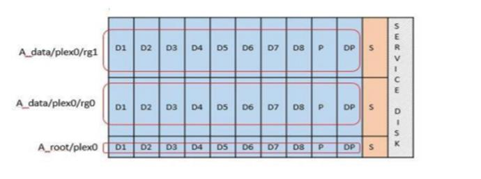
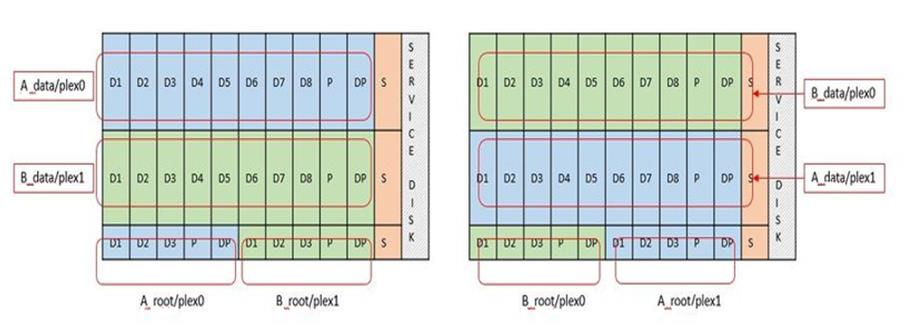

Notas de la versión
Notas de la versión
Servicios RAID de software para almacenamiento conectado local
 Sugerir cambios
Sugerir cambios
El RAID de software es una capa de abstracción RAID implementada en la pila de software ONTAP. Proporciona la misma funcionalidad que la capa RAID en una plataforma ONTAP tradicional como FAS. La capa RAID realiza cálculos de paridad de unidades y proporciona protección frente a fallos individuales de unidades dentro de un nodo ONTAP Select.
Independientemente de las configuraciones RAID de hardware, ONTAP Select también proporciona una opción RAID de software. Es posible que una controladora RAID de hardware no esté disponible o que no sea deseable en ciertos entornos, como cuando ONTAP Select se implementa en un hardware genérico de factor de forma pequeño. El software RAID amplía las opciones de implementación disponibles para incluir tales entornos. Para activar el RAID de software en su entorno, aquí tiene que recordar algunos puntos:
-
Está disponible con licencia Premium o Premium XL.
-
Solo admite unidades SSD o NVMe (requiere licencia Premium XL) para discos raíz y de datos ONTAP.
-
Requiere un disco de sistema independiente para la partición de arranque de la máquina virtual de ONTAP Select.
-
Seleccione un disco independiente, un SSD o una unidad NVMe, para crear un almacén de datos para los discos del sistema (NVRAM, una tarjeta Boot/CF, coredump y Mediator en una configuración de varios nodos).
-
Notas
-
Los términos disco de servicio y disco del sistema se utilizan indistintamente.
-
Los discos de servicio son los VMDK que se utilizan en la máquina virtual de ONTAP Select para realizar el servicio de varios elementos, como la agrupación en clústeres, el arranque, etc.
-
Los discos de servicio se encuentran físicamente en un solo disco físico (denominado colectivamente el disco físico de servicio/sistema) como se ve desde el host. Ese disco físico debe contener un almacén de datos DAS. La implementación de ONTAP crea estos discos de servicio para la máquina virtual de ONTAP Select durante la puesta en marcha del clúster.
-
-
No es posible separar los discos del sistema ONTAP Select en varios almacenes de datos o en varias unidades físicas.
-
Hardware RAID no quedó obsoleto.
Configuración RAID de software para almacenamiento conectado local
Al utilizar el software RAID, la ausencia de un controlador RAID de hardware es ideal, pero, si un sistema tiene una controladora RAID existente, debe cumplir con los siguientes requisitos:
-
El controlador RAID de hardware debe estar desactivado de modo que los discos puedan presentarse directamente al sistema (un JBOD). Este cambio se puede realizar normalmente en el BIOS de la controladora RAID
-
O la controladora RAID de hardware debe estar en modo HBA SAS. Por ejemplo, algunas configuraciones de BIOS permiten un modo “AHCI” además de RAID, que se puede elegir para activar el modo JBOD. Esto permite un paso a través para que las unidades físicas puedan verse como en el host.
Según el número máximo de unidades que admite la controladora, puede que se requiera una controladora adicional. Con el modo SAS HBA, asegúrese de que la controladora I/o (SAS HBA) sea compatible con una velocidad mínima de 6 GB/s. Sin embargo, NetApp recomienda una velocidad de 12 Gbps.
No se admiten otros modos ni configuraciones de controladora RAID de hardware. Por ejemplo, algunos controladores permiten una compatibilidad RAID 0 que puede permitir que discos pasen a través artificialmente, pero las implicaciones pueden ser indeseables. El tamaño admitido de discos físicos (solo SSD) está entre 200 GB y 16 TB.

|
Los administradores deben realizar un seguimiento de las unidades que utiliza la máquina virtual de ONTAP Select y evitar un uso accidental de esas unidades en el host. |
Discos físicos y virtuales de ONTAP Select
Para configuraciones con controladores RAID de hardware, la redundancia del disco físico es proporcionada por la controladora RAID. ONTAP Select se presenta con uno o más VMDK desde los que el administrador de ONTAP puede configurar agregados de datos. Estos VMDK se dividen en un formato RAID 0 porque con el software ONTAP RAID es redundante, ineficiente e ineficaz debido a la resiliencia que se proporciona a nivel de hardware. Además, los VMDK que se utilizan para los discos del sistema están en el mismo almacén de datos que los VMDK que se utilizan para almacenar datos de usuario.
Al utilizar RAID de software, la implementación de ONTAP presenta ONTAP Select con un conjunto de discos virtuales (VMDK) y discos físicos asignaciones de dispositivos sin formato [RDM] para SSD y dispositivos de paso a través o DirectPath IO para NVMes.
Las siguientes figuras muestran esta relación con más detalle, y destacan la diferencia entre los discos virtualizados utilizados para los entornos internos de ONTAP Select VM y los discos físicos utilizados para almacenar datos de usuario.
ONTAP Select software RAID: Uso de discos virtualizados y RDM

Los discos de sistema (VMDK) residen en el mismo almacén de datos y en el mismo disco físico. El disco NVRAM virtual requiere un medio rápido y duradero. Por lo tanto, solo se admiten almacenes de datos NVMe y de tipo SSD.

Los discos de sistema (VMDK) residen en el mismo almacén de datos y en el mismo disco físico. El disco NVRAM virtual requiere un medio rápido y duradero. Por lo tanto, solo se admiten almacenes de datos NVMe y de tipo SSD. Cuando se utilizan unidades NVMe para datos, el disco del sistema también debe ser un dispositivo NVMe por motivos de rendimiento. Un buen candidato para el disco del sistema en una configuración todo NVMe es una tarjeta INTEL Optane.
|
|
Con la versión actual, no es posible separar más los discos del sistema ONTAP Select en varios almacenes de datos o en varias unidades físicas. |
Cada disco de datos se divide en tres partes: Una pequeña partición raíz (franja) y dos particiones de tamaño igual para crear dos discos de datos vistos en el equipo virtual de ONTAP Select. Las particiones utilizan el esquema de datos raíz (RD2) como se muestra en las figuras siguientes para un clúster de un solo nodo y para un nodo de un par de alta disponibilidad.
P indica una unidad de paridad. DP indica una unidad de paridad doble y. S indica una unidad de repuesto.
Partición de disco RDD para clústeres de un solo nodo

Particionado de discos RDD para clústeres multinodo (pares de alta disponibilidad)

El software ONTAP RAID es compatible con los siguientes tipos de RAID: RAID 4, RAID-DP y RAID-TEC. Estas son las mismas construcciones RAID que utilizan las plataformas FAS y AFF. Para el aprovisionamiento raíz, ONTAP Select solo admite RAID 4 y RAID-DP. Cuando se utiliza RAID-TEC para el agregado de datos, la protección general es RAID-DP. ONTAP Select ha utiliza una arquitectura sin elementos compartidos que replica la configuración de cada nodo en el otro nodo. Esto significa que cada nodo debe almacenar su partición raíz y una copia de la partición raíz del interlocutor. Dado que un disco de datos tiene una única partición raíz, el número mínimo de discos de datos variará en función de si el nodo ONTAP Select forma parte de un par de alta disponibilidad o no.
En el caso de clústeres de un solo nodo, todas las particiones de datos se usan para almacenar datos locales (activos). En el caso de los nodos que forman parte de un par de alta disponibilidad, una partición de datos se usa para almacenar datos locales (activos) en ese nodo, y la segunda partición de datos se usa para reflejar datos activos del mismo nivel de alta disponibilidad.
Dispositivos de paso a través (DirectPath IO) frente a Mapas de dispositivos sin formato (RDM)
VMware ESX no admite actualmente discos NVMe como mapas de dispositivos sin formato. Para que ONTAP Select pueda tomar el control directo de los discos NVMe, las unidades NVMe deben configurarse en ESX como dispositivos de paso a través. Tenga en cuenta que para configurar un dispositivo NVMe como dispositivos de paso a través, es necesario contar con soporte de la BIOS del servidor y un proceso disruptivo que requiere el reinicio del host ESX. Además, el número máximo de dispositivos de paso a través por host ESX es 16. Sin embargo, la implementación de ONTAP limita esta cifra a 14. Este límite de 14 dispositivos NVMe por nodo ONTAP Select significa que una configuración todo NVMe proporcionará una densidad de IOPS muy alta (IOPS/TB) a costa de la capacidad total. También, si se desea una configuración de alto rendimiento con una mayor capacidad de almacenamiento, la configuración recomendada es un tamaño de máquina virtual ONTAP Select grande, una tarjeta INTEL Optane para el disco del sistema y un número nominal de unidades SSD para el almacenamiento de datos.
|
|
Para aprovechar al máximo el rendimiento de NVMe, tenga en cuenta el gran tamaño de máquina virtual de ONTAP Select. |
Hay una diferencia adicional entre los dispositivos de paso a través y RDM. Los RDM se pueden asignar a una máquina virtual en ejecución. Los dispositivos de paso a través requieren un reinicio de la máquina virtual. Esto significa que cualquier procedimiento de reemplazo de una unidad NVMe o expansión de capacidad (adición de unidades) requerirá un reinicio de máquina virtual ONTAP Select. La operación de reemplazo de unidades y expansión de capacidad (adición de unidades) está condicionada por un flujo de trabajo de puesta en marcha de ONTAP. La implementación de ONTAP gestiona el reinicio de ONTAP Select para clústeres de un solo nodo y la conmutación por error/conmutación tras recuperación para parejas de alta disponibilidad. Sin embargo, es importante destacar la diferencia entre trabajar con unidades de datos SSD (no se requieren reinicios/conmutaciones por error de ONTAP Select) y trabajar con unidades de datos NVMe (se requiere reinicio/conmutación por error de ONTAP Select).
Aprovisionamiento de discos físicos y virtuales
Para proporcionar una experiencia de usuario más optimizada, ONTAP Deploy aprovisiona automáticamente los discos del sistema (virtual) desde el almacén de datos (disco de sistema físico) especificado y los conecta a la máquina virtual de ONTAP Select. Esta operación se produce automáticamente durante la configuración inicial para que la máquina virtual de ONTAP Select pueda arrancar. Los RDM se crean particiones y el agregado raíz se crea automáticamente. Si el nodo ONTAP Select forma parte de una pareja de alta disponibilidad, las particiones de datos se asignan automáticamente a un pool de almacenamiento local y a un pool de almacenamiento de reflejos. Esta asignación se produce automáticamente tanto durante las operaciones de creación de clúster como durante las operaciones de almacenamiento-añadido.
Debido a que los discos de datos del equipo virtual de ONTAP Select están asociados con los discos físicos subyacentes, tiene implicaciones de rendimiento para la creación de configuraciones con un mayor número de discos físicos.
|
|
El tipo de grupo RAID del agregado raíz depende del número de discos disponibles. La implementación de ONTAP selecciona el tipo de grupo de RAID adecuado. Si tiene suficientes discos asignados al nodo, utiliza RAID-DP; de lo contrario, crea un agregado raíz de RAID-4. |
Al añadir capacidad a una máquina virtual ONTAP Select mediante RAID de software, el administrador debe tener en cuenta el tamaño de la unidad física y el número de unidades necesarias. Para obtener más información, consulte la sección "Aumente la capacidad de almacenamiento".
Al igual que sucede con los sistemas FAS y AFF, solo es posible añadir unidades con una capacidad igual o superior a un grupo RAID existente. Las unidades de mayor capacidad tienen el tamaño adecuado. Si va a crear nuevos grupos RAID, el nuevo tamaño del grupo RAID debe coincidir con el tamaño del grupo RAID existente para garantizar que el rendimiento general del agregado no se deteriore.
Haga coincidir un disco ONTAP Select con el disco ESX correspondiente
Los discos ONTAP Select suelen denominarse NET x.y. Puede utilizar el siguiente comando de ONTAP para obtener el UUID de disco:
<system name>::> disk show NET-1.1 Disk: NET-1.1 Model: Micron_5100_MTFD Serial Number: 1723175C0B5E UID: *500A0751:175C0B5E*:00000000:00000000:00000000:00000000:00000000:00000000:00000000:00000000 BPS: 512 Physical Size: 894.3GB Position: shared Checksum Compatibility: advanced_zoned Aggregate: - Plex: -This UID can be matched with the device UID displayed in the ‘storage devices’ tab for the ESX host

En el shell ESXi, puede introducir el comando siguiente para parpadear el LED de un disco físico determinado (identificado por su naa.Unique-id).
esxcli storage core device set -d <naa_id> -l=locator -L=<seconds>
Fallos de varias unidades cuando se utiliza RAID de software
Puede que un sistema encuentre una situación en la que varias unidades se encuentren en estado de error al mismo tiempo. El comportamiento del sistema depende de la protección RAID del agregado y de la cantidad de unidades con errores.
Un agregado RAID4 puede sobrevivir a un fallo de disco, un agregado RAID-DP puede sobrevivir a dos fallos de disco y un agregado de RAID-TEC puede sobrevivir a tres fallos de discos.
Si el número de discos con errores es inferior al número máximo de errores compatibles con el tipo de RAID y, si hay un disco de repuesto disponible, el proceso de reconstrucción se inicia automáticamente. Si no hay discos de repuesto disponibles, el agregado proporciona datos en estado degradado hasta que se añadan los discos de repuesto.
Si el número de discos con fallos es superior al número máximo de errores compatibles con el tipo de RAID, el complejo local se Marca como erróneo y el estado del agregado es degradado. Los datos se sirven desde el segundo complejo que reside en el partner de alta disponibilidad. Esto significa que cualquier solicitud de I/o del nodo 1 se envía a través del puerto de interconexión de clúster e0e (iSCSI) a los discos ubicados físicamente en el nodo 2. Si el segundo complejo también falla, el agregado se Marca como defectuoso y los datos no están disponibles.
Se debe eliminar un complejo fallido y volver a crear para que se reanude la duplicación correcta de los datos. Tenga en cuenta que un error de varios discos que provoque que un agregado de datos se degrade también hace que se degrade un agregado raíz. ONTAP Select utiliza el esquema de partición de datos-raíz (RDD) para dividir cada unidad física en una partición raíz y dos particiones de datos. Por tanto, la pérdida de uno o más discos puede afectar a varios agregados, incluida la raíz local o la copia del agregado raíz remoto, así como al agregado de datos local y la copia del agregado de datos remoto.
C3111E67::> storage aggregate plex delete -aggregate aggr1 -plex plex1
Warning: Deleting plex "plex1" of mirrored aggregate "aggr1" in a non-shared HA configuration will disable its synchronous mirror protection and disable
negotiated takeover of node "sti-rx2540-335a" when aggregate "aggr1" is online.
Do you want to continue? {y|n}: y
[Job 78] Job succeeded: DONE
C3111E67::> storage aggregate mirror -aggregate aggr1
Info: Disks would be added to aggregate "aggr1" on node "sti-rx2540-335a" in the following manner:
Second Plex
RAID Group rg0, 5 disks (advanced_zoned checksum, raid_dp)
Usable Physical
Position Disk Type Size Size
---------- ------------------------- ---------- -------- --------
shared NET-3.2 SSD - -
shared NET-3.3 SSD - -
shared NET-3.4 SSD 208.4GB 208.4GB
shared NET-3.5 SSD 208.4GB 208.4GB
shared NET-3.12 SSD 208.4GB 208.4GB
Aggregate capacity available for volume use would be 526.1GB.
625.2GB would be used from capacity license.
Do you want to continue? {y|n}: y
C3111E67::> storage aggregate show-status -aggregate aggr1
Owner Node: sti-rx2540-335a
Aggregate: aggr1 (online, raid_dp, mirrored) (advanced_zoned checksums)
Plex: /aggr1/plex0 (online, normal, active, pool0)
RAID Group /aggr1/plex0/rg0 (normal, advanced_zoned checksums)
Usable Physical
Position Disk Pool Type RPM Size Size Status
-------- --------------------------- ---- ----- ------ -------- -------- ----------
shared NET-1.1 0 SSD - 205.1GB 447.1GB (normal)
shared NET-1.2 0 SSD - 205.1GB 447.1GB (normal)
shared NET-1.3 0 SSD - 205.1GB 447.1GB (normal)
shared NET-1.10 0 SSD - 205.1GB 447.1GB (normal)
shared NET-1.11 0 SSD - 205.1GB 447.1GB (normal)
Plex: /aggr1/plex3 (online, normal, active, pool1)
RAID Group /aggr1/plex3/rg0 (normal, advanced_zoned checksums)
Usable Physical
Position Disk Pool Type RPM Size Size Status
-------- --------------------------- ---- ----- ------ -------- -------- ----------
shared NET-3.2 1 SSD - 205.1GB 447.1GB (normal)
shared NET-3.3 1 SSD - 205.1GB 447.1GB (normal)
shared NET-3.4 1 SSD - 205.1GB 447.1GB (normal)
shared NET-3.5 1 SSD - 205.1GB 447.1GB (normal)
shared NET-3.12 1 SSD - 205.1GB 447.1GB (normal)
10 entries were displayed..
|
|
Para probar o simular uno o varios fallos de la unidad, utilice el storage disk fail -disk NET-x.y -immediate comando. Si hay un repuesto en el sistema, el agregado comenzará a reconstruirse. Puede comprobar el estado de la reconstrucción con el comando storage aggregate show. Puede quitar la unidad con error simulada a través de la implementación de ONTAP. Tenga en cuenta que ONTAP ha marcado la unidad como Broken. La unidad no está rota y se puede volver a añadir con la puesta en marcha de ONTAP. Para borrar la etiqueta rota, introduzca los siguientes comandos en la CLI de ONTAP Select:
|
set advanced disk unfail -disk NET-x.y -spare true disk show -broken
El resultado del último comando debe estar vacío.
NVRAM virtualizada
Los sistemas FAS de NetApp vienen equipados tradicionalmente con una tarjeta PCI NVRAM física. Esta tarjeta es una tarjeta de alto rendimiento que contiene memoria flash no volátil que proporciona un impulso significativo del rendimiento de escritura. Para ello, otorga a ONTAP la capacidad de reconocer de inmediato las escrituras entrantes al cliente. También puede programar la transferencia de los bloques de datos modificados a medios de almacenamiento más lentos en un proceso conocido como separación.
Los sistemas de consumo no suelen estar equipados con este tipo de equipos. Por lo tanto, la funcionalidad de la tarjeta NVRAM se ha virtualizado y se ha colocado en una partición en el disco de arranque del sistema ONTAP Select. Es por esta razón por la cual la colocación del disco virtual del sistema de la instancia es extremadamente importante.